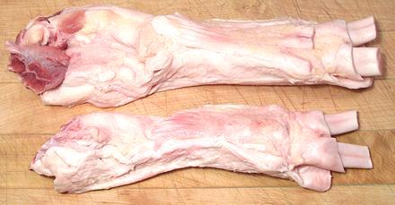

Beef Tendons

These are very popular in Asia as a feature ingredient in soups and
stews. They are recovered from the lower shank leading into the foot.
They can also be used as a more convenient substitute for Calf Foot.
The larger of the two photo specimens was 13-1/8 ounces and 12 inches
long, the smaller 7-3/4 ounces and 10 inches.
More on Cuts of Beef
Buying:
Here in Southern California these can be
found in the meat section of larger markets serving an Asian community,
particularly Chinese and Philippine. They are packed on foam trays
weighing about 1 pounds. Freezing them for longer storage will not
harm them.
Prep:
Rinse and cut is about all that's needed. For most
recipes you will cut them crosswise about 1 to 1-1/2 inches long, then
split the two tendons apart and then split the individual tendons in half
lengthwise. Other recipes cook them whole and slice them crosswise.
Cooking:
For use as a feature item, you need a total
cooking time of 2-3/4 to 3 hours. For use to enrich soup stock (in place
of Calf Foot, for instance) a much longer cooking time is needed. They
should nearly dissolve.
Yield:
Just about 100%.
ab_tendonz 101010 - www.clovegarden.com
©Andrew Grygus - agryg@clovegarden.com - Photos
on this page not otherwise credited © cg1
- Linking to and non-commercial use of this page permitted